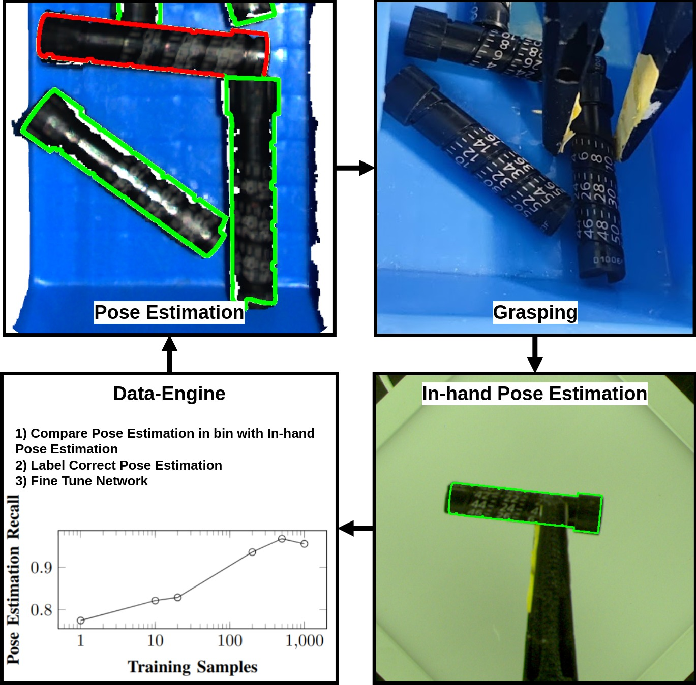

The GOGO engine

Good Grasps Only: A data engine for self-supervised fine-tuning of pose estimation using grasp poses for verification
To cite:
@article{hagelskjaer2024good,
title={Good Grasps Only: A data engine for self-supervised fine-tuning of pose estimation using grasp poses for verification},
author={Hagelskj{\ae}r, Frederik},
journal={arXiv preprint arXiv:2409.11512},
year={2024}
}